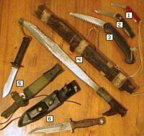

|  |
Als je in de jungle moet overleven, dan is goed gereedschap
onontbeerlijk. Vooral grote messen zijn handig om bijvoorbeeld lianen, stekels
of andere vegetatie te verwijderen. Zonder een groot mes, kom je nauwelijks 10 meter
verder. De parang of mandau (kapmes) is essentieel bij het bouwen met hout. Wanneer
de takken niet al te dik zijn, dan kunnen deze met een kapmes in één keer
worden doorgehakt. Voor het hakken van dun hout voor een kampvuur, is dit bijvoorbeeld
erg handig. Bij het bouwen van constructies met houten stammetjes, kan een parang of mandau
ook goed van pas komen. De massa van het lemmet zorgt ervoor dat het hout middels hakken
snel bewerkt kan worden. |
Hier volgt een opsomming van het gereedschap dat we
mee hadden:
- Dit is een normaal Swiss-zakmes, waarvan Steven en André er beide één
mee hadden. Deze messen werden met name gebruikt bij voedselbereiding, bij het snijden van dun touw
en bij kleine technische klussen.
- Dit is Richard's Swiss-zakmes; een stukje groter en robuuster dan het mes van punt 1.
- Dit is André's zaag (merk: Gerber, USA). Het zaagblad is van een hoge kwaliteit
roestvrij staal. Dagelijks werd deze zaag gebruikt om stammetjes voor de hangtent te zagen.
Indonesiërs, die alleen kapmessen gewend zijn, vonden deze zaag maar iets magisch, want
de zaag gaat met gemak door tropisch hardhout heen.
- Dit is Steven's mandau met schede. Deze is pas gekocht nadat we uit de jungle kwamen. In de jungle
hadden we een parang. Het lemmet van een parang wordt steeds breder aan het uiteinde en loopt
wat krommer dan bij een Mandau. De parang die we hadden, zijn we echter kwijt geraakt. Een parang of
mandau is ideaal om snel hout mee te bewerken. Door ermee te hakken kunnen zijtakken van stammetjes
sneller verwijderd worden dan met een zaag.
- Dit is André's jungle-mes met schede (Jungle King II van Aitor). Het mes draagt hij in de jungle altijd bij zich; deels
voor zijn eigen veiligheid, deels om de weg vrij te maken. Touw en takken die niet al te dik zijn,
kunnen met dit mes worden behandeld. Verder is het mes geschikt voor het lichte hak-werk.
Het lemmet bevat ook nog een zaaggedeelte wat bedoeld is om taaie lianen mee
door te zagen. Voor het zagen van hout is de zaag (punt 3) veel meer geschikt.
- Dit is Richard's jungle-mes met schede. Het mes heeft een hardhouten heft en is van zeer
hoge kwaliteit. Richard droeg dit mes in de jungle altijd bij zich. Het toepassingsgebied is ongeveer gelijk aan het mes bij punt 5.
Omdat het mes iets zwaarder is dan het mes bij punt 5, kan er iets beter mee gehakt worden.
|